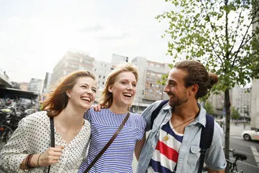

Germans value traditional food and home-cooked meals. Meals are often seen as a social and family activity, emphasizing punctuality, order, and appreciation for quality ingredients. This stems from a cultural focus on discipline, planning, and regional culinary traditions.
Germans tend to be reserved at first, but they value deep, reliable friendships. Social bonds are built slowly, and trust is earned over time. This behavior is influenced by cultural norms around privacy, personal space, and respect for boundaries.
Work is highly organized and professional. Punctuality, following rules, and doing one’s job efficiently are expected. Germans generally separate work and personal life, focusing on precision and responsibility, which reflects the country’s cultural emphasis on reliability and structure.